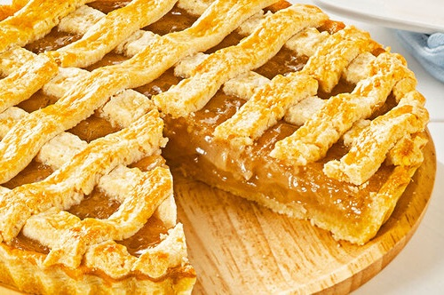

- Ingredientes
- Massa:
- 150g ou 1 e ½ xicara (chá) de manteiga ou margarina gelada e em cubos
- 2 ovos
- 45g ou 4 colheres (sopa) de açúcar refinado
- 300g ou 1 xícara (chá) de farinha de trigo
- 3ml Aroma de Baunilha Mix
- Recheio:
- 500g ou 4 unidades maçã fuji ou gala
- 50g ou 4 colheres (sopa) de açúcar
- 500ml ou 2 xícaras (chá) de água
- 200g ou 1 xícara (chá) de Creme de Confeiteiro Mix
- 100g ou 1/2 xícara (chá) de Chocolate Branco Selecta Namur picado
- Canela em pó a gosto
- Modo de Preparo
- Massa:
- 1. Em uma vasilha coloque a farinha, açúcar e misture.
- 2. Acrescente a manteiga e misture com a ponta dos dedos até formar uma farofa úmida.
- 3. Cuidado para não sovar demais e amolecer a massa.
- 4. Sobre a farofa, acrescente os ovos ligeiramente batidos e sove apenas para ficar homogêneo.
- 5. Coloque em filme plástico e leve para gelar por 30 minutos.
- 6. Separe 1/3 da massa para fazer a tampa da torta e deixe na geladeira.
- 7. Com o auxílio de um rolo, abra a massa entre dois plásticos e, em seguida, coloque na forma.
- 8. Leve novamente para gelar por 30 minutos.
- 9. Fure com um garfo o fundo da massa e leve para pré-assar por 180° C por 15 minutos.
- 10. Retire da forma e reserve.
- Recheio:
- 11. Em uma panela coloque as maçãs, o açúcar, a canela e água.
- 12. Tampe a panela e deixe cozinhar por 5 minutos após abrir fervura.
- 13. Acrescente o creme de confeiteiro e mexa até dar ponto.
- 14. Retire do fogo e acrescente o chocolate picado, mexendo até dissolver totalmente.
- 15. Reserve fechado até esfriar em temperatura ambiente.